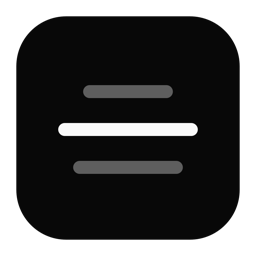

notchjam GitHubA tiny Mac app that shows Spotify’s synced lyrics under your notch when you double‑tap ⌥ Option.
double‑tap left ⌥ → lyrics. double‑tap again → gone.
the problem
You’re working with music on. The chorus comes in, you want to sing along, and you don’t actually know the words. Getting them means switching to Spotify, opening the lyrics view, and then finding your way back to whatever you were doing.
Not a big problem. But now it’s two key taps.
what it does
- Double‑tap left ⌥ (or press ⌥⌘L, or any shortcut you set) and a small black panel drops out of the notch.
- It shows the current line big, with the previous and next lines dimmed, synced to the song.
- It never takes focus, so you can keep typing while it’s open.
- It stays until you tap again, or hides by itself after a few seconds if you prefer. You can also pin it.
- No notch? It shows up at the top of the screen instead.
- Lyrics come from LRCLIB. Only the song’s title, artist, album and length are sent. No account, no analytics.
install
Needs macOS 14 or later, the Spotify desktop app, and Xcode 16+ to build it. There’s no prebuilt download yet.
- Build it:
git clone https://github.com/okaynils/notchjam.git cd notchjam xcodebuild -project notchjam.xcodeproj -scheme notchjam \ -configuration Release -derivedDataPath build \ CODE_SIGN_IDENTITY=- build - Move it to Applications and open it:
cp -R build/Build/Products/Release/notchjam.app /Applications/ open /Applications/notchjam.app - Click the waveform icon in the menu bar → Settings… → Connect next to Spotify, and allow the prompt.
- For the double‑tap, click Allow… next to Input Monitoring and switch notchjam on. It only looks at Option key timing. If you’d rather skip that, use ⌥⌘L.
If the double‑tap stops working after you rebuild, click Reset in Settings and allow it again. macOS forgets the permission when a self‑built app changes.